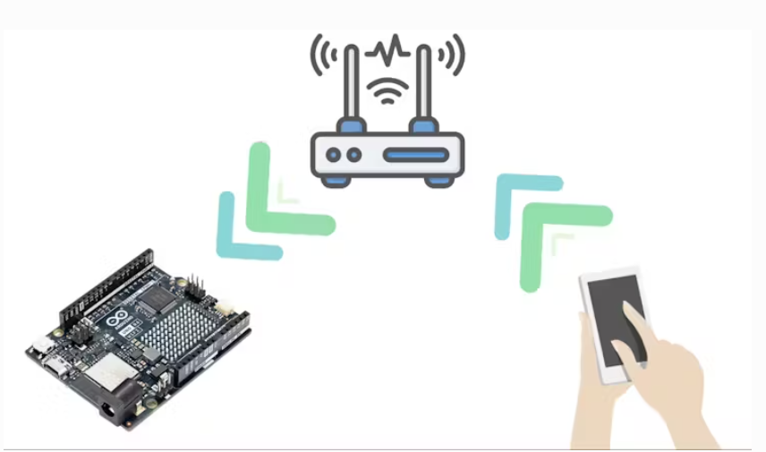
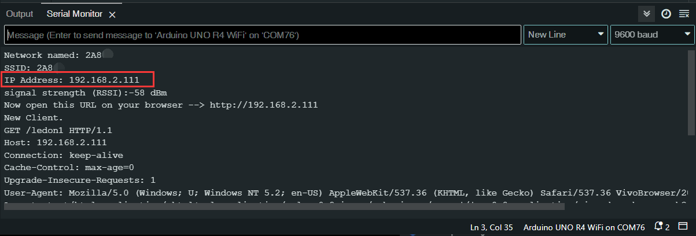

Web Control Relay (Station Mode)
Overview
In this Article we are going to make a very useful and very easy home-automation project.
And for making of this home-automation system, we don’t required any kind Internet and IOT Platform like blynk, ESP-Rainmeker, Arduino IOT Cloud.
We need only a Router or hotspot for making a local server, here router will work as a bridge between web-page and Arduino UNO R4 WIFI board.
{kind=link}
Wiring
Note
In the experiment, a relay is used to control the closing and opening of a 5mm LED. If you have enough experience and knowledge in using electricity, you can try to control the lighting bulb with a relay while ensuring safety.
{kind=link}
1. Upload the code
Open the 18_Web_Control_Relay file under the path of Basic-Starter-Kit-for-Arduino-Uno-R4-WiFi-main\Code, or copy this code into Arduino IDE.
Note
Wi-Fi® support is enabled via the built-in WiFiS3 library that is shipped with the Arduino UNO R4 Core. Installing the core automatically installs the WiFiS3 library.
You still need to create or modify arduino_secrets.h, replace SECRET_SSID and SECRET_PASS with the name and password of your home router WiFi access point. The file should contain:
//arduino_secrets.h header file
#define SECRET_SSID "yournetwork"
#define SECRET_PASS "yourpassword"
Note
After uploading the code, check the IP address of UNO R4’s Wifi in the serial monitor of Arduino IDE.

{kind=link}
Then use your mobile phone to connect to your home router’s WiFi (the mobile phone and UNO R4 are connected to the same LAN), and access the returned IP address in the serial monitor in the mobile browser. The browser will get the control page.
{kind=link}
2. Code explanation
Importing Required Libraries
Importing the
Arduino_LED_Matrixlibrary for controlling LED matrix,WiFiS3library for WiFi functionalities, andarduino_secrets.hfor sensitive data like passwords.#include "Arduino_LED_Matrix.h" #include "WiFiS3.h" #include "arduino_secrets.h"
Configuration and Variable Initialization
Define WiFi SSID, password, key index, LED pins, WiFi status, and create a WiFi server.
#define LED1 7 #define LED2 8 char ssid[] = SECRET_SSID; char pass[] = SECRET_PASS; int keyIndex = 0; int status = WL_IDLE_STATUS; WiFiServer server(80);
setup()FunctionInitialize serial communication, configure the WiFi module, start the server, and initialize LED pins.
void setup() { Serial.begin(9600); matrix.begin(); pinMode(LED1, OUTPUT); pinMode(LED2, OUTPUT); digitalWrite(LED1, HIGH); digitalWrite(LED2, HIGH); if (WiFi.status() == WL_NO_MODULE) { Serial.println("Communication with WiFi module failed!"); while (true); } String fv = WiFi.firmwareVersion(); if (fv < WIFI_FIRMWARE_LATEST_VERSION) { Serial.println("Please upgrade the firmware"); } while (status != WL_CONNECTED) { Serial.print("Network named: "); Serial.println(ssid); status = WiFi.begin(ssid, pass); delay(10000); } server.begin(); printWifiStatus(); }
Main
loop()FunctionThe
loop()function performs two key operations: running the web server and updating the LED matrix.void loop() { webServer(); LEDMatrix(); }
LEDMatrix()FunctionLoad a frame to the LED matrix.
void LEDMatrix() { matrix.loadFrame(hi); }
webServer()FunctionListen for incoming clients, parse their requests, and control LEDs based on the received commands.
void webServer() { WiFiClient client = server.available(); if (client) { Serial.println("New Client."); String currentLine = ""; currentTime = millis(); previousTime = currentTime; while (client.connected() && currentTime - previousTime <= timeoutTime) { currentTime = millis(); if (client.available()) { char c = client.read(); Serial.write(c); header += c; if (c == '\n') { if (currentLine.length() == 0) { client.println("HTTP/1.1 200 OK"); client.println("Content-type:text/html"); client.println("Connection: close"); client.println(); if (header.indexOf("GET /ledon1") >= 0) { output1 = "on"; digitalWrite(LED1, LOW); } else if (header.indexOf("GET /ledoff1") >= 0) { output1 = "off"; digitalWrite(LED1, HIGH); } if (header.indexOf("GET /ledon2") >= 0) { output2 = "on"; digitalWrite(LED2, LOW); } else if (header.indexOf("GET /ledoff2") >= 0) { output2 = "off"; digitalWrite(LED2, HIGH); } client.println("<!DOCTYPE html><html>"); client.println("<head><meta name=\"viewport\" content=\"width=device-width, initial-scale=1\">"); client.println("<link rel=\"icon\" href=\"data:,\">"); client.println("<style>html { font-family: Helvetica; display: inline-block; margin: 0px auto; text-align: center;}"); client.println(".on { background-color: #FF0000; border: 5px; color: white; padding: 16px 40px; border-radius: 20px;"); client.println("text-decoration: none; font-size: 30px; margin: 2px; cursor: pointer;}"); client.println(".off {background-color: #000000;border: 5px; color: white; padding: 16px 40px; border-radius: 20px;"); client.println("text-decoration: none; font-size: 30px; margin: 2px; cursor: pointer;}</style></head>"); client.println("<body><h1>Web Relay Control</h1>"); client.println("<p>Relay1 " + output1 + "</p>"); if (output1 == "off") { client.println("<p><a href=\"/ledon1\"><button class=\"off\">Turn ON</button></a></p>"); } else { client.println("<p><a href=\"/ledoff1\"><button class=\"on\">Turn OFF</button></a></p>"); } client.println("<p>Relay2 " + output2 + "</p>"); if (output2 == "off") { client.println("<p><a href=\"/ledon2\"><button class=\"off\">Turn ON</button></a></p>"); } else { client.println("<p><a href=\"/ledoff2\"><button class=\"on\">Turn OFF</button></a></p>"); } client.println("</body></html>"); client.println(); break; } else { currentLine = ""; } } else if (c != '\r') { currentLine += c; } } } header = ""; client.stop(); Serial.println("Client disconnected."); Serial.println(""); } }
printWifiStatus()FunctionPrint the current WiFi status, including SSID, IP address, and signal strength.
void printWifiStatus() { Serial.print("SSID: "); Serial.println(WiFi.SSID()); IPAddress ip = WiFi.localIP(); Serial.print("IP Address: "); Serial.println(ip); long rssi = WiFi.RSSI(); Serial.print("signal strength (RSSI):"); Serial.print(rssi); Serial.println(" dBm"); Serial.print("Now open this URL on your browser --> http://"); Serial.println(ip); }